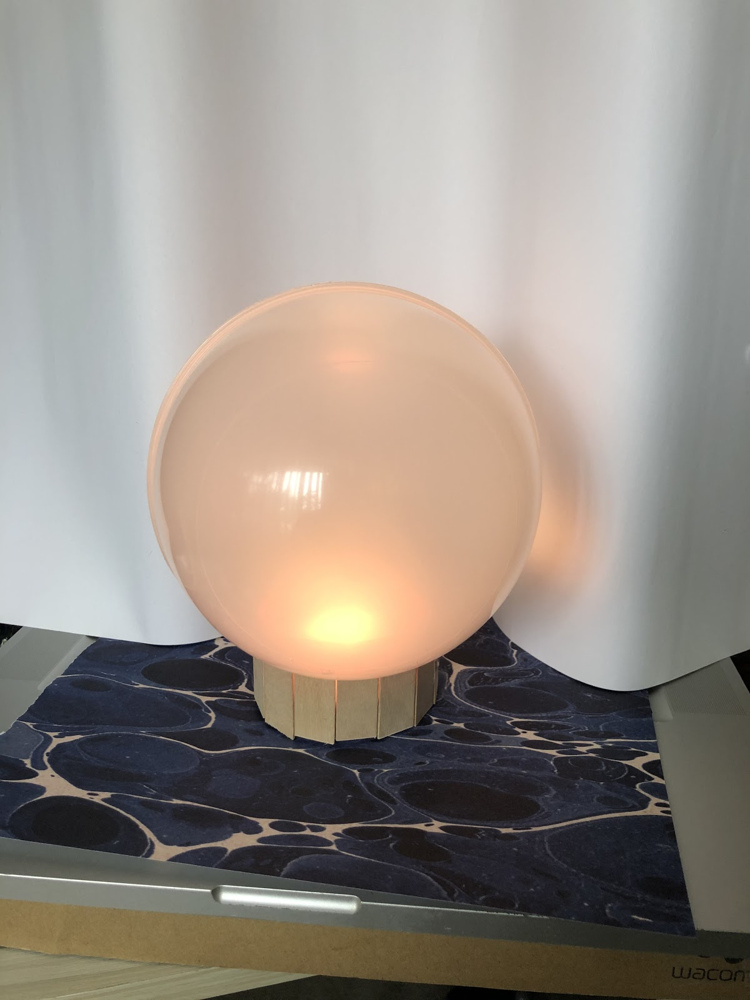
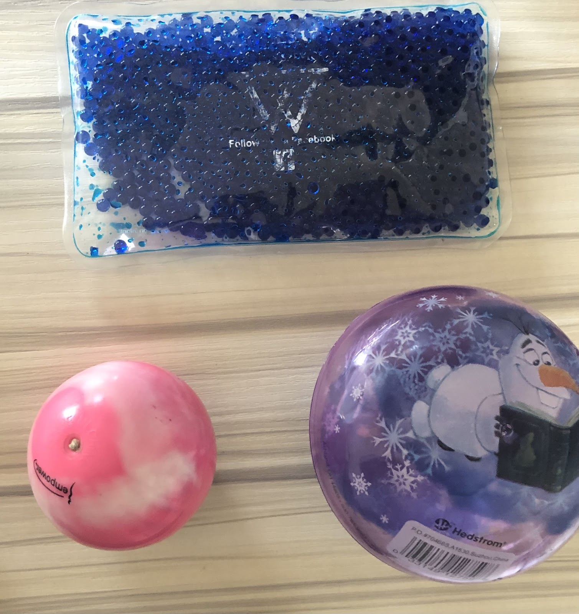
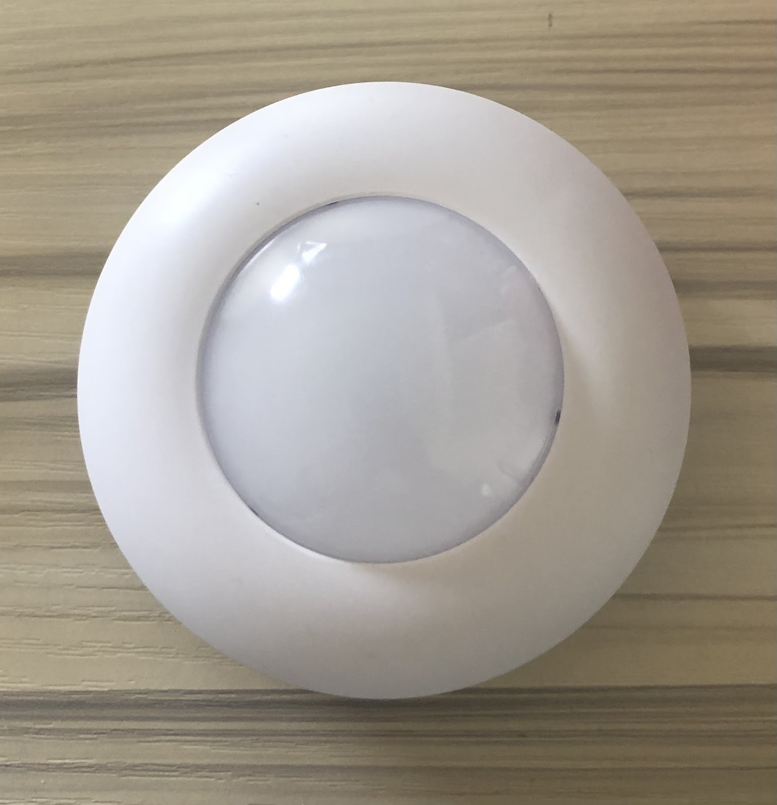

Low fidelity prototype

I
Ambi prototype sitting on a desk displaying default mode.
II
Partner ambi device lights up green to indicate that the user of the corresponding ambi is happy.

III
Examples of material of Ambi, similar to a stress ball, malleable, meant to encourage users to reach out and touch or squeeze.

IV
Plastic covers that form the orb structure.
V
Base made out of popsicle sticks.

VI
Color changing battery operated light.